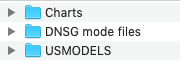

Output Structure
The forecasting outcomes are stored in the folder named OUTPUT, where the forecasting comparison chart, the impulse response plot, and the variance decomposition plot are stored in the subfolder Charts, and individual model forecasts can be found in the subfolder USMODELS.
Note
In addition to forecasting outcomes, there are some results directly derived from Dynare, such as the model solution, and they can be found in the subfolders of the MODELS folder.

Graphs saved in Charts
The charts and plots generated by the platform are all stored in the subfolder Charts, which include forecasting comparison charts, impulse response plots based on the Bayesian IRF, and historical variance decomposition plots. These charts are saved in PNG-format.
Model forecasts saved in USMODELS
The Excel spreadsheets storing individual forecasting results are saved in the subfolder USMODELS. The syntax of the subfolder name in this folder is as follows:
ModelName_DataType_EstimationType_(spfnc)_EstimationMethod
- The
ModelNamedenotes the name of the DSGE model. - The
DataTypeis the type of data used for estimation, which can beRTfor real data, orDTrevised data. - The
EstimationTypesummarizes the type of estimation, which can beEWfor expanding windows, orRWfor rolling windows. - If SPF nowcast data are used in the estimation, then a string
spfncwill appear in the name of the subfolder, otherwise it will not. - The
EstimationMethodshows the estimation algorithm used, which can bemodeforecastorMHforecast.
For example, if we estimate the Smets and Wouters (2007) model using real time data-set with expanding windows, and we choose to augment the data by including SPF nowcast, and if we choose to employ the Metropolis-Hasting algorithm in our estimation, then the derived forecasting results will be stored in a folder named as US_SW07_RT_EW_spfnc_MHforecast.
Inside these subfolders, you will find Excel spreadsheets that store model forecasts. The names of these spreadsheets include a string to present the vintages. In each spreadsheet, the forecasting outcomes are stored in different sheets.
Note
Only the forecast of three observables are in these Excel spreadsheets, which are the annualized real GDP growth rate, the annualized GDP deflator, and the Federal funds rate in annualized terms.
The median sheet and the mean sheet contain the median and mean forecasts respectively. The first line of each sheet are the names of the observables. Starting from the second line, you find the forecasts of the observables. Again, if SPF is not conditioned on the first forecast will be nowcast, and if SPF is conditioned upon the first forecast will be the next period forecast.
Output from Bayesian VARs and Metropolis-Hastings estimations have another sheet named distribution. On this sheet, the deciles of the forecast distribution are stored.
Adding model forecasts
Should you wish to include your own model forecasts into the platform for comparison purposes only, please save it under another subfolder, and name the subfolder as well as the spreadsheet following the conventions above.